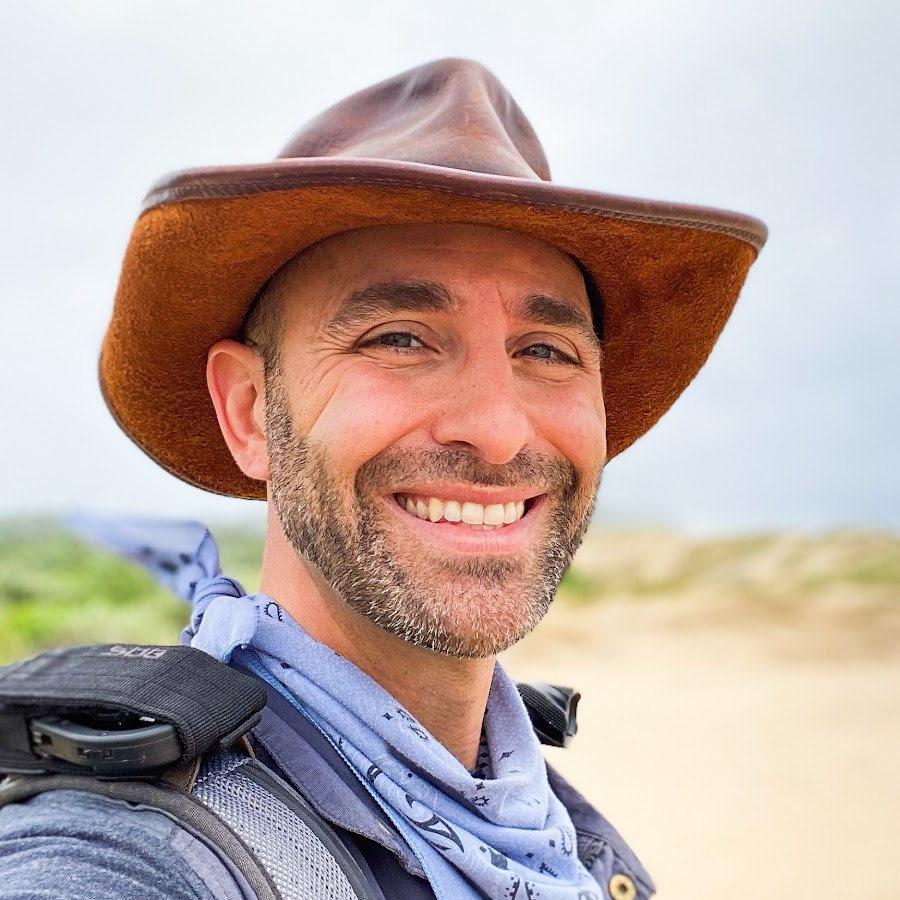

Social Media References
Macaila Wagner
Social Media Environmental Educator
Macaila Wagner is a content creator and influencer based in Whistler, British Columbia, Canada. She has a Bachelor of Science degree in Zoology and describes herself as a "Biologist in Training." Macaila combines her scientific background with content creation, focusing on nature facts, mountain life, and travel. Her unique combination of scientific knowledge and outdoor adventure expertise has helped her build an engaged following interested in both nature education and mountain adventures.
Coyote Peterson
Social Media Environmental Educator
Coyote Peterson is an American wildlife educator, YouTuber, and television host best known for his extreme animal encounters and educational content. Beyond the dramatic animal encounters, Peterson focuses heavily on wildlife education and conservation. He holds a degree in film production from Ohio State University and combines his media expertise with genuine passion for animals to create content that teaches viewers about animal behavior, habitats, and the importance of conservation efforts.